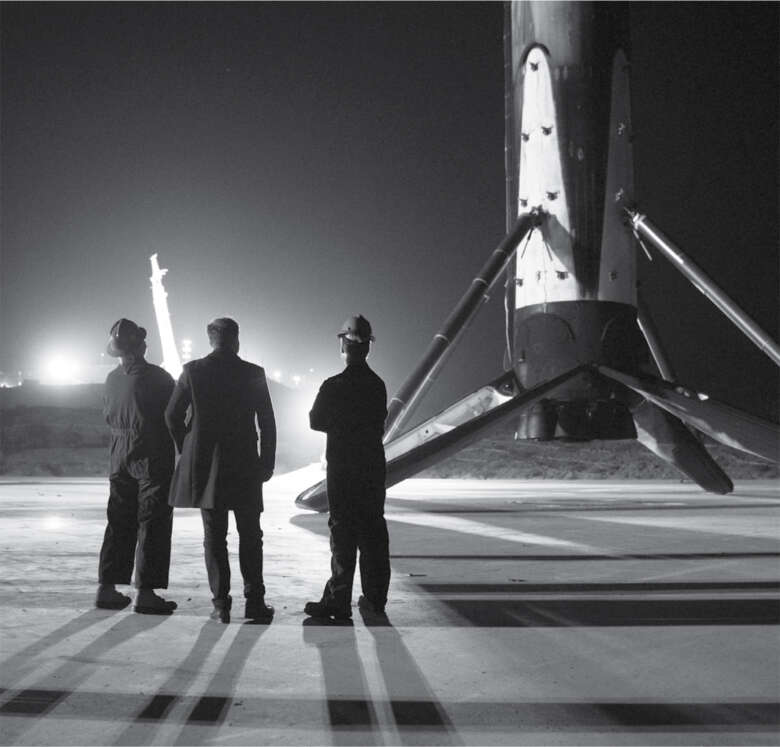

Grasshopper
Hành trình chế tạo tên lửa tái sử dụng của Musk đã dẫn đến sự phát triển của một nguyên mẫu Falcon 9 thử nghiệm có biệt danh là "Grasshopper". Nó có chân hạ cánh và cánh lưới điều hướng, có thể nhảy lên xuống từ từ đến độ cao khoảng ba nghìn feet tại cơ sở thử nghiệm SpaceX ở McGregor, Texas. Phấn khích trước những tiến bộ đạt được, Musk đã mời hội đồng quản trị SpaceX đến đó vào tháng 8 năm 2014 để chứng kiến tương lai.
Đó là ngày làm việc thứ hai của Sam Teller, một sinh viên tốt nghiệp Harvard năng động và đầy tham vọng, người đã ký hợp đồng trở thành chánh văn phòng của Musk. Với bộ râu được cắt tỉa làm nổi bật nụ cười rộng và đôi mắt tinh anh, anh sở hữu sự nhạy bén và lòng nhiệt tình mà sếp của anh còn thiếu. Từng là quản lý kinh doanh của The Harvard Lampoon, anh biết cách khai thác sự hài hước và cường độ làm việc điên cuồng của Musk (và thậm chí còn đưa Musk đến một bữa tiệc tại lâu đài của Lampoon ngay sau khi bắt đầu làm việc cho ông).
Tại cuộc họp ở cơ sở thử nghiệm McGregor, hội đồng quản trị SpaceX đã thảo luận về thiết kế của bộ đồ vũ trụ mà công ty đang phát triển, mặc dù họ còn nhiều năm nữa mới đưa con người vào vũ trụ. "Họ đang ngồi bàn luận nghiêm túc về kế hoạch xây dựng một thành phố trên Sao Hỏa và mọi người sẽ mặc gì ở đó", Teller sau đó kinh ngạc, "và mọi người cứ cư xử như thể đây là một cuộc trò chuyện hoàn toàn bình thường."
Sự kiện chính của hội đồng quản trị là xem thử nghiệm hạ cánh của Falcon 9. Đó là một ngày nắng gắt tháng 8 ở sa mạc Texas, với những con dế khổng lồ bay rợp trời, và các thành viên hội đồng quản trị túm tụm dưới một chiếc lều nhỏ. Tên lửa được cho là sẽ bay lên đến độ cao khoảng ba nghìn feet, kích hoạt động cơ hãm, lơ lửng trên bệ phóng, và sau đó hạ cánh thẳng đứng. Nhưng nó đã không làm được. Ngay sau khi cất cánh, một trong ba động cơ gặp sự cố và tên lửa phát nổ.
Sau vài giây im lặng, Musk trở lại chế độ phiêu lưu. Anh bảo người quản lý địa điểm lấy xe để họ có thể lái xe đến đống đổ nát đang bốc khói. "Không được", người quản lý nói. "Quá nguy hiểm."
"Chúng ta sẽ đi", Musk nói. "Nếu nó sắp nổ, chúng ta cũng có thể đi qua đống đổ nát đang cháy. Bao giờ anh mới có cơ hội làm điều đó?"
Mọi người cười lo lắng và đi theo. Nó giống như một cảnh trong phim của Ridley Scott, với những miệng hố trên mặt đất, cỏ cháy âm ỉ và những mảnh kim loại cháy đen. Steve Jurvetson hỏi Musk liệu họ có thể lấy một vài mảnh làm kỷ niệm không. "Chắc chắn rồi", anh nói, tự mình nhặt một vài mảnh. Antonio Gracias cố gắng cổ vũ mọi người bằng cách nói rằng những bài học tốt nhất trong cuộc đời đến từ thất bại. "Nếu được lựa chọn", Musk trả lời, "tôi thích học hỏi từ thành công hơn."
Đó là khởi đầu cho một chuỗi ngày khó khăn không chỉ với SpaceX mà còn với toàn bộ ngành công nghiệp vũ trụ. Một tên lửa do Orbital Sciences chế tạo đã phát nổ trong nhiệm vụ vận chuyển hàng hóa đến Trạm Vũ trụ Quốc tế. Sau đó, một nhiệm vụ vận chuyển hàng hóa của Nga cũng thất bại. Các phi hành gia trên Trạm Vũ trụ có nguy cơ cạn kiệt lương thực và vật tư. Vì vậy, rất nhiều kỳ vọng được đặt vào nhiệm vụ vận chuyển hàng hóa bằng tên lửa Falcon 9 của SpaceX, dự kiến diễn ra vào ngày 28 tháng 6 năm 2015, đúng ngày sinh nhật lần thứ 44 của Musk.
Nhưng hai phút sau khi phóng, một thanh chống đỡ bình heli ở tầng thứ hai bị cong vênh, và tên lửa phát nổ. Sau bảy năm phóng thành công, đây là lần đầu tiên Falcon 9 gặp sự cố.
Trong khi đó, Bezos đang đạt được một số tiến bộ. Tháng 11 năm 2015, ông phóng một tên lửa bay lên độ cao 62 dặm trong 11 phút, đạt đến độ cao được coi là khởi đầu của không gian vũ trụ, rồi quay trở lại. Được dẫn đường bởi hệ thống GPS và cánh lái, tên lửa trở lại Trái đất và động cơ đẩy được khởi động lại để giảm tốc độ hạ cánh. Với chân đế được triển khai, nó lơ lửng ngay trên mặt đất, điều chỉnh tọa độ và hạ cánh nhẹ nhàng.
Bezos công bố thành công trong một cuộc họp báo vào ngày hôm sau. "Tái sử dụng hoàn toàn sẽ thay đổi cuộc chơi", ông nói. Sau đó, ông đăng tweet đầu tiên của mình: "Loài vật hiếm nhất - một tên lửa đã qua sử dụng. Hạ cánh có kiểm soát không hề dễ dàng, nhưng nếu làm đúng thì trông có vẻ dễ dàng."
Musk cảm thấy khó chịu. Ông cho rằng đó chỉ là một cú nhảy dưới quỹ đạo, không phải là mục tiêu thực sự mà ông hướng đến: phóng một trọng tải vào quỹ đạo. Vì vậy, ông đáp trả trên Twitter: "@JeffBezos Không hẳn là 'hiếm nhất'. Tên lửa Grasshopper của SpaceX đã thực hiện 6 chuyến bay dưới quỹ đạo 3 năm trước và vẫn còn hoạt động."
Trên thực tế, Grasshopper chỉ bay lên khoảng ba nghìn feet, bằng một phần trăm so với tên lửa của Blue Origin. Nhưng Musk đã đúng khi phân biệt. Tên lửa có thể nhảy lên và quay trở lại rìa không gian có thể thú vị đối với khách du lịch vũ trụ, nhưng sẽ cần những tên lửa có sức mạnh như Falcon 9 để thực hiện các nhiệm vụ như phóng vệ tinh và tiếp cận Trạm Vũ trụ Quốc tế. Hạ cánh và tái sử dụng một tên lửa như vậy sẽ là một thành tựu ở một tầm cao khác.
Cơ hội để Musk làm điều đó đến vào ngày 21 tháng 12 năm 2015, chỉ bốn tuần sau chuyến bay dưới quỹ đạo của Bezos.
Trong hành trình không ngừng nghỉ để chinh phục trọng lực, Musk đã thiết kế lại Falcon 9. Phiên bản mới chứa nhiều nhiên liệu oxy lỏng hơn trên tên lửa bằng cách làm lạnh siêu tốc xuống âm 350 độ F, khiến nó đặc hơn nhiều. Như mọi khi, ông luôn tìm mọi cách để tăng sức mạnh cho tên lửa mà không làm tăng đáng kể kích thước hoặc khối lượng của nó. "Elon liên tục thúc ép chúng tôi phải tăng thêm một chút hiệu suất bằng cách làm lạnh nhiên liệu ngày càng nhiều", Mark Juncosa nói. "Đó là một ý tưởng tài tình, nhưng nó thực sự khiến chúng tôi đau đầu." Vài lần Juncosa phản đối, nói rằng nó sẽ gây ra những thách thức với van và rò rỉ, nhưng Musk không hề nao núng. "Không có lý do gì mà việc này không thể thực hiện được", ông nói. "Tôi biết nó cực kỳ khó khăn, nhưng các anh phải cố gắng vượt qua."
"Tôi đã sợ chết khiếp trong quá trình đếm ngược", Juncosa nói. Đột nhiên, anh nhận thấy điều gì đó đáng lo ngại trên nguồn cấp dữ liệu video từ khoang giữa tầng một và tầng hai. Có một vài giọt, và anh không biết đó là nitơ lỏng, không sao cả, hay oxy lỏng từ bể siêu lạnh, có thể là một vấn đề. "Tôi đã rất sợ hãi", Juncosa nhớ lại. "Nếu đó là công ty của tôi, tôi đã dừng lại."
"Anh phải quyết định việc này", Juncosa nói với Musk khi thời gian đếm ngược chỉ còn một phút.
Musk ngừng lại vài giây. Liệu có oxy lỏng trong tầng trung gian thì rủi ro đến mức nào? Nguy hiểm, nhưng chỉ là một chút thôi. "Mặc kệ," anh nói. "Cứ làm thôi."
Nhiều năm sau, Juncosa xem lại đoạn phim ghi lại khoảnh khắc Musk đưa ra quyết định đó. "Tôi cứ nghĩ anh ấy đã thực hiện một số phép tính phức tạp để quyết định xem phải làm gì, nhưng thực ra anh ấy chỉ nhún vai và ra lệnh. Anh ấy có trực giác về các vấn đề vật lý."
Anh ấy đã đúng. Việc phóng diễn ra hoàn hảo.
Sau đó là mười phút chờ đợi để xem liệu tầng đẩy có quay trở lại và hạ cánh an toàn trên bệ hạ cánh mà SpaceX đã xây dựng cách Bệ phóng 39A khoảng một dặm hay không. Ngay sau khi tầng thứ hai tách ra, tầng đẩy đã kích hoạt động cơ đẩy để lật ngược trở lại Mũi Canaveral, hướng phần đuôi xuống dưới và giảm tốc độ hạ cánh. Với GPS và cảm biến dẫn đường cùng các cánh lái lưới giúp điều hướng, nó nhẹ nhàng hạ xuống bệ hạ cánh. (Dừng lại một giây và nghĩ xem điều đó thật tuyệt vời như thế nào.)
Musk lao ra khỏi phòng điều khiển và chạy băng qua đường cao tốc, nhìn chằm chằm vào bóng tối để xem tên lửa xuất hiện trở lại. "Xuống đi, xuống từ từ," anh thì thầm khi đứng bên đường cao tốc, tay chống nạnh. Rồi có một tiếng nổ lớn. "Chết tiệt," anh nói, quay người và bước thất vọng trở lại đường cao tốc.
Nhưng bên trong phòng điều khiển, tiếng reo hò vang lên. Màn hình hiển thị tên lửa đang đứng thẳng trên bệ phóng, và người thông báo phóng lặp lại câu nói nổi tiếng của Neil Armstrong trên mặt trăng: "Falcon đã hạ cánh." Hóa ra, âm thanh lớn đó là tiếng nổ siêu thanh từ việc tên lửa quay trở lại tầng khí quyển phía trên.
Một trong những kỹ sư bay chạy ra khỏi phòng điều khiển với tin tức. "Nó đang đứng trên bệ phóng!" cô ấy hét lên. Musk quay lại và chạy nhanh về phía bệ phóng. "Mẹ kiếp," anh cứ lẩm bẩm một mình. "Mẹ kiếp."
Tối hôm đó, tất cả họ đã đến một quán bar ven sông tên là Fishlips để ăn mừng. Musk nâng cốc bia. "Chúng ta vừa phóng và hạ cánh tên lửa lớn nhất thế giới!" anh hét lên với khoảng trăm nhân viên và những người xem kinh ngạc khác. Khi đám đông hô vang "USA, USA", anh nhảy lên xuống, giơ nắm đấm lên không trung.
"Chúc mừng @SpaceX đã hạ cánh tầng đẩy dưới quỹ đạo của Falcon," Bezos viết trong một tweet. "Chào mừng đến với câu lạc bộ!" Được bao bọc trong lớp vỏ bọc lịch sự là một nhát dao sắc bén: tuyên bố rằng tầng đẩy mà SpaceX hạ cánh là "dưới quỹ đạo", đặt nó vào cùng câu lạc bộ với tầng đẩy mà Blue Origin đã hạ cánh. Về mặt kỹ thuật, ông ấy đã đúng. Bản thân tầng đẩy SpaceX chưa bao giờ đi vào quỹ đạo, mà chỉ đẩy một trọng tải lên quỹ đạo. Nhưng Musk rất tức giận. Khả năng đưa trọng tải vào quỹ đạo, theo anh, đã đưa tên lửa SpaceX lên một đẳng cấp khác.

Xem tầng đẩy đã hạ cánh